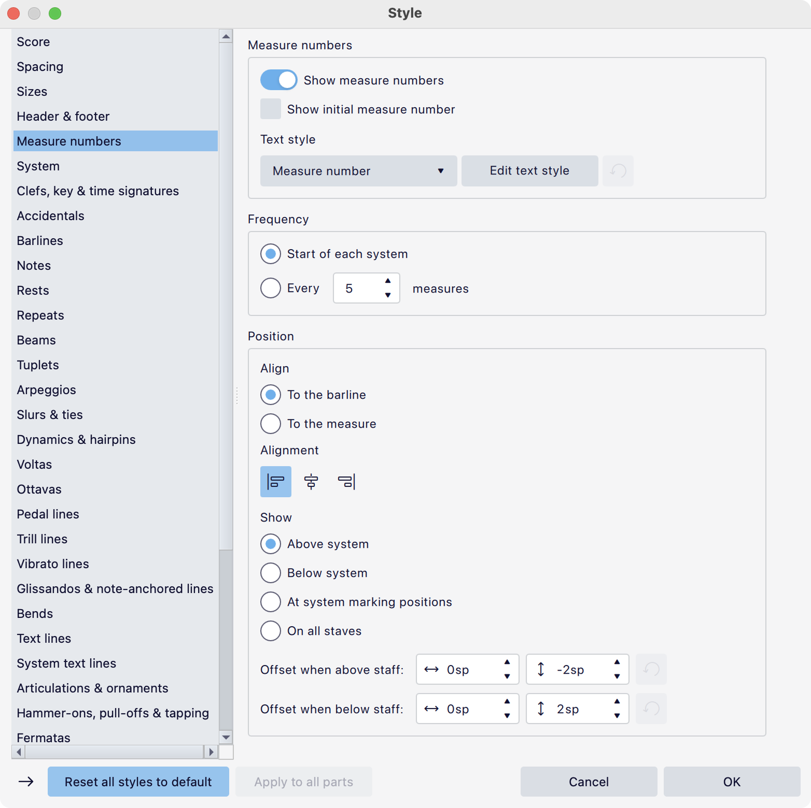
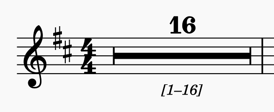

Measure numbering
Showing and hiding measure numbers
By default, MuseScore shows measure numbers at the start of each system except for the first in a section.
To turn measure numbers on or off for the whole score:
- Go to Format -> Style -> Measure numbers.
- Toggle Show measure numbers.
To configure whether a number should be shown or hidden on a particular measure:
- Right-click the measure and choose Measure properties...
- Change Measure number mode to Always show or Always hide.
The default setting for Measure number mode is Auto which means that a number will be shown or not according to the score's style settings.
You can also show a number on a specific measure by applying the 'Measure number' item from the Text palette (under More). This is equivalent to setting Measure number mode to Always show.
To remove a number from a specific measure, you can select it and press Del. If this is an automatically generated number, this sets Measure number mode to Always hide. If it was an explicitly added measure number (and is not in a measure where a number would be generated anyway) this sets Measure number mode to Auto.
Changing the measure number sequence
There are ways to alter the sequence of numbers which can be useful in various circumstances. Note that this affect the visual numbering only. Internally, MuseScore Studio always numbers the bars consecutively through the whole score, starting at 1, and these are the numbers that will be shown in the status bar.
Excluding a measure from the count
- Right-click the measure and choose Measure properties...
- Check Exclude from measure count.
This option is automatically checked for pickup bars when one is specified in the New Score Wizard.
Altering the numbering of a measure
- Right-click the measure and choose Measure properties...
- Change the value of Add to measure number.
Both positive and negative values are accepted. This can be useful when starting a new movement in the same score. If the first movement is 100 bars long, the second will start at bar 101. If you set Add to measure number to -100 on the first bar of the second movement, it will now be numbered as bar 1.
Resetting measure numbering for a new section
By default, the numbering of measures always restarts from 1 at the beginning of a new section (after a section break). To prevent this so that the numbering is continuous:
- Select the section break.
- Go to the Properties panel.
- Uncheck Reset measure numbers for new section.
See Using sections for multiple movements or songs for more details.
Measure number properties
Measure numbers are text items, so the usual properties for text are available in the Properties panel under Text.
It is important to note that measure numbers are usually automatically generated items, rather than explicitly entered by the user. As such, while it is possible to make adjustments to them via Properties, these changes may be lost if the layout of the score changes and the numbers are regenerated.
Measure number style
This section describes all the options available in Format -> Style... -> Measure numbers.

Measure numbers
The top section contains the most general settings:
- Show measure numbers: Whether measure numbers should be shown at all.
- Show initial measure number: Whether a number should be shown on measure 1 (unchecked by default).
- Text style: Which text style to use for measure numbers. 'Measure number' is the default, but there is also a 'Measure number (alternate)' style provided so that you can quickly switch between two different styles. You can also choose any other style from the dropdown, or define your own.
- The Edit text style button takes you to the page in Text styles where the currently selected text style can be configured.
Frequency
Here you can specify how often bar numbers should appear. Start of each system is the default.
Position
These options specify where the bar numbers should be placed.
- Align: The numbers can be aligned (via the next setting) relative To the barline or To the measure.
- Alignment: Left, center or right.
- Show: At which positions the bar numbers should appear. Choose from:
- Above system: Only at the top of the system (above the top staff).
- Below system: Only at the bottom of the system (below the bottom staff).
- At system marking positions: At the positions where system markings are shown.
- On all staves: On every staff in the score. When this option is selected, an extra Position setting becomes available, to specify whether the numbers should be Above or Below the staves.
- Offset when above/below staff: The default offset for measure numbers above and below the staff respectively
The At system marking positions option can be used if you need a more unusual configuration (for example, above certain sections of instruments, or above and below the system). See Instruments and system markings.
Measure number range at multimeasure rests

When shown, measure number ranges appear bracketed below their multimeasure rests by default.
Here, you can determine if and how measure number ranges are shown next to multimeasure rests.
- Show measure number ranges: Turn measure number ranges on or off.
- Text style: Choose the text style used for the range text.
- The Edit text style button takes you to the page in Text styles where the currently selected text style can be configured.
- Bracket type: Use square brackets, parentheses, or nothing.
- Alignment: Left, center or right.
- Position: Choose whether the range goes above or below the multimeasure rest.
- Offset: Fine-tune the positioning of the range text.